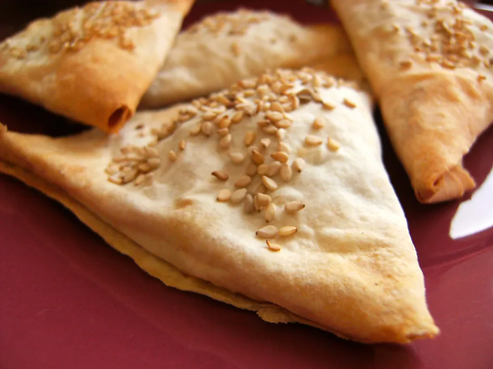

Boreks

A cheesy Turkish stuffed pastry, perfect as
an appetizer. Kind of addicting!
Makes 35 to 40 pies.
Original recipe hosted on
Food.com
.
Ingredients
- 8 oz feta cheese, grated
- 8 oz mozzarella cheese, grated
- 2 eggs, beaten
- 3 tbsp paarsley, chopped
- 3 tbsp chives, chopped
- 3 tbsp mint, chopped
- 1 pinch nutmeg
- 8 oz phyllo pastry
- 3-4 tbsp melted butter
- salt and fresh ground pepper
Directions
- Preheat oven to 350 deg C. In a bowl,
blend the feta and mozzarella cheese with
the beaten eggs. Add the chopped herbs,
season with pepper and nutmeg and
stir well to mix.
- Cut the sheets of pastry into four
rectangular strips approximately
3 inches wide. Cover all but one or two
strips with a damp cloth to prevent
them from drying out.
- Brush on strip of pastry at a time
with a little melted butter. Place 1 tsp
filling at the bottom edge. Fold one corner
over the filling to make a triangle shape.
Continue folding the pastry over itself
until you get to the end of the strip.
Keep making triangles until all the
mixture is used up.
- Place the boreks on a greased baking sheet
and bake in the oven for about 30 minutes
or until golden brown.
Return to home.